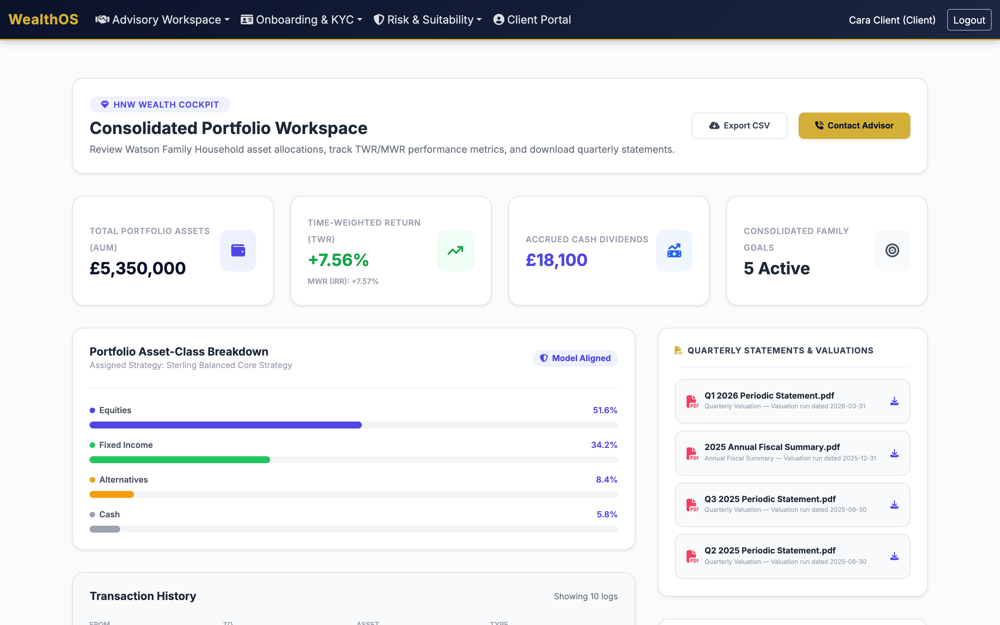
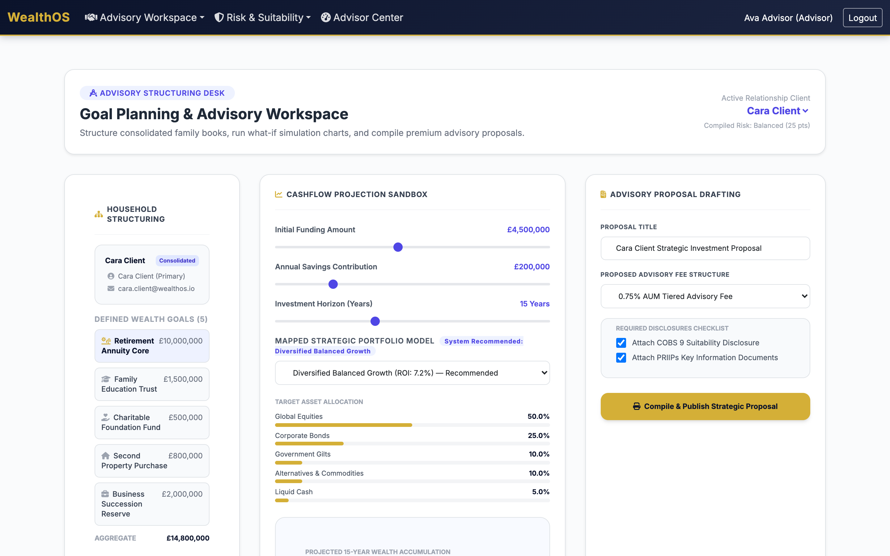
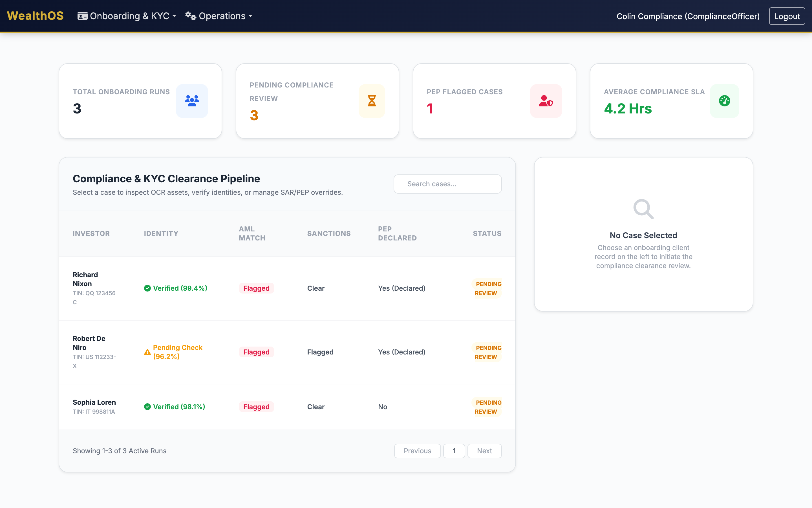
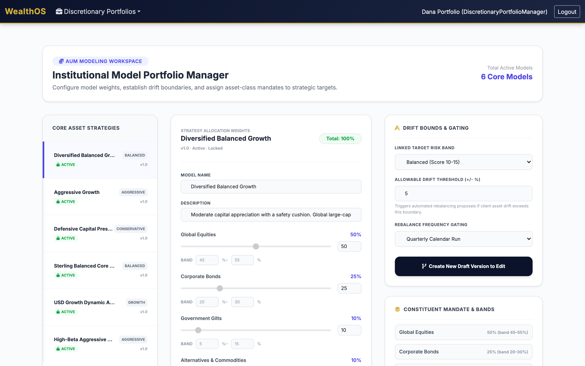
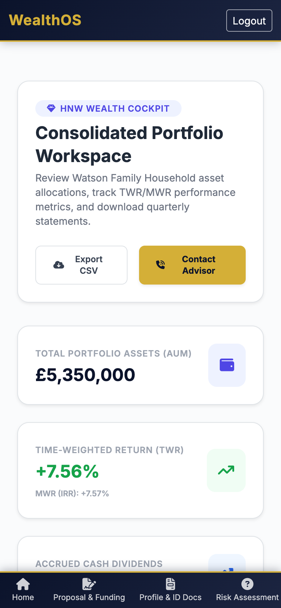

WealthOS runs your entire advisory lifecycle — digital onboarding to settlement — with MiFID II, the FCA Consumer Duty and COBS 9 suitability built in. Institutional capability, without an institutional budget or a multi-year platform migration.

UK advice firms are forced to choose between seven-figure platforms built for global private banks, foreign wealthtech that has never heard of the Consumer Duty or a COBS 9 suitability report, or spreadsheets that collapse at the first FCA review. WealthOS is purpose-built for the middle — the firm that needs real regulatory rails and a real book of business, right-sized and owned outright rather than rented.
Not a generic CRM with a portfolio bolt-on. Every module is shaped around how FCA-regulated advice actually works.
Digital onboarding, risk profiling, suitability, portfolio proposals, order capture and settlement — one continuous, auditable flow from prospect to funded mandate.
Every proposal and advisory order passes a MiFID II / COBS 9 suitability check against the client's risk profile before it can proceed — no off-the-rails advice.
The four outcomes tracked in real time with RAG status, a price-and-value distribution that flags outliers, disclosure read-rates and a QA sampling queue over completed suitability checks.
Target market, risk-reward, knowledge and distribution strategy are versioned, published and locked — then synced to the denormalised fields the pre-trade suitability gate reads.
Autonomous agents — like the idle-cash investment sweep — run behind a tenant-wide kill-switch, policy gates and a complete, immutable audit trail of every prompt, thought and action.
Time-weighted and money-weighted return, asset-class breakdown, a filterable transaction ledger and downloadable periodic statements — across the entire family, in one view.
PEP, sanctions and large-transaction escalations with document and OCR side-by-side, clear-or-escalate decisions, and one-click suspicious-activity reports to the immutable ledger.
Aggregate executed orders into block trades, allocate fills fairly with largest-remainder rounding, and monitor RTS 28 best execution with signed slippage and per-venue summaries.
The full T+2 settlement lifecycle with custodian SSI matching, plus dividends, coupons, splits, rights and mergers — mandatory and voluntary — processed against the engine of record.
Distinct workspaces for advisers, clients, compliance, operations, risk, analysts, discretionary managers and administrators — each scoped by route guard and server-side authorization.
Not mockups. Every screen below is live in the WealthOS demo environment today.
Structure the household, run a what-if cashflow projection, map a model portfolio to the client's risk category — and publish a strategic proposal with the suitability and disclosure documents already attached.

A live clearance pipeline pulls every escalated applicant — PEP hits, sanctions matches, large-funding reviews — into one queue, with identity, OCR and AML verdicts side by side and an immutable audit trail behind every decision.

Discretionary managers define model weights, asset-class bands and the drift thresholds that trigger automated rebalancing. Publishing locks a version and syncs the targets the suitability gate and drift monitor read.

A clean, installable client app where the whole family's wealth is consolidated at a glance — performance, allocation and statements — and where a client can review, accept and fund an adviser's proposal through open banking, in seconds.

Regulated advice can't run on a black box. Every automated decision in WealthOS is deterministic where the rules demand it, explainable on every output, and wrapped in a tenant-wide kill-switch with a complete audit trail. And it all runs inside your own infrastructure — no client data ever leaves your tenant for a third-party AI service. Intelligence that assists the adviser and never escapes human control.
Every autonomous agent runs behind a tenant-wide kill-switch and per-agent policy gates — value caps, scope limits, approval thresholds. Anything beyond a gate is queued for a human decision, and every prompt, recommendation and action is written to an immutable audit trail.
An agent that watches client accounts for idle cash above a policy threshold and proposes a model-aligned reinvestment sweep. Within its limits it can act; above them it asks. A live proof point for governed automation — fully reversible and signed into the audit trail.
A COBS 9 scoring engine turns the client questionnaire into a risk category — and flags the contradiction when appetite outruns capacity to absorb loss, capping the recommendation and demanding adviser consultation. Deterministic, reproducible and defensible line by line.
Portfolios are continuously measured against their model's target weights. When drift breaches the threshold, WealthOS generates the corrective buy/sell proposal automatically — ready for the manager to approve and route to the engine as advisory orders.
Time-weighted and money-weighted return computed server-side from the valuation time series — flows neutralised, IRR solved numerically — alongside multi-year cashflow projections that turn a client's goals into a fundable plan.
PEP, sanctions and large-transaction patterns surface as clear-or-escalate signals into the compliance queue — every flag explainable, every clear-or-escalate decision captured, with one-click suspicious-activity reporting to the ledger.
Retention is revenue and liquidity is opportunity. WealthOS scores every client in an adviser's book for churn risk and forecasts their cash — and, crucially, shows the factors behind every number, so each signal is something an adviser can act on and a compliance officer can defend. It's decision-support, never an automated action.
A transparent model scores each client 0–100 from engagement signals — net withdrawals, login inactivity, advice-contact gaps, complaints, satisfaction and tenure. Deterministic and reproducible, not a black box.
Every score breaks down into the factors driving it, with each one's contribution — so an adviser knows why a client is flagged and exactly what to address first.
One click drafts a warm, compliance-aware outreach for an at-risk client — through the same governed inference provider, with a private, self-hosted model in production. The adviser reviews and sends.
Projects each client's cash balance from recurring flows, with a confidence band, and flags when it will cross an idle threshold — turning the governed idle-cash sweep from reactive to anticipatory. The adviser still decides.
Multi-custodian breadth is only a vendor lock-in when you rent the platform. Because you own WealthOS, your custodian agreements and credentials stay yours — WealthOS provides the standards-native engineering that speaks to them, and BlastAsia keeps it running.
Adapters built to the open standards every custodian already speaks — SWIFT ISO 15022 (MT535 holdings, MT536 transactions), ISO 20022 semt, FIX and Open Banking. Any conforming feed normalizes into one canonical book of record.
The long tail of custodians that just send a file onboard by mapping columns, not writing code — so "many custodians" scales by configuration instead of N bespoke builds. Your credentials, your sandbox, your relationship.
A reconciliation engine surfaces every break against your book — missing positions, quantity and value mismatches — and a certification harness proves each adapter against golden fixtures before it ever goes live.
An all-in-one wealth platform is one rented system, front to back. WealthOS plus Cumulus Quartz spans the same ground — owned and best-of-breed: WealthOS runs the front office, Cumulus Quartz is the cloud-native engine of record behind it, and the adapter that joins them ships in WealthOS today.
The front office — owned
Onboarding, risk profiling, suitability, proposals, order capture, the client portal, Consumer Duty, governed AI and multi-custodian reconciliation — source-available, white-labelled, hosted on your own infrastructure.
The engine of record
A cloud-native asset-management system — order management with pre-trade compliance, fund accounting, settlement, custody processing and tokenized-asset support — with transparent, non-AUM pricing.
Two walkthroughs — one from the client's seat, one from the back office.
Client experience
The full client journey: one-tap sign-in, your consolidated household portfolio, live performance, and reviewing, accepting & funding an adviser's proposal through open banking.
Platform walkthrough
Adviser, compliance, discretionary manager, operations and risk. Purpose-built workspaces, COBS 9 suitability gating, RTS 28 best execution, and governed AI — all wired in from day one.
Stacked against the ways UK advice firms run their books today.
| Capability | WealthOS Purpose-built for FCA advice | Enterprise wealth suite (Avaloq / FNZ / SS&C) |
Foreign wealthtech SaaS (global vendors) |
Spreadsheets / CRM |
|---|---|---|---|---|
| COBS 9 suitability gating | ● Built-in | ✕ Custom build | ✕ Not localized | ✕ Manual |
| FCA Consumer Duty monitoring | ● Built-in | ◑ Module | ✕ Generic | ✕ Manual |
| MiFID II product governance | ● Built-in | ◑ Add-on | ◑ Partial | ✕ None |
| KYC / AML, PEP & sanctions, SAR | ● Built-in | ◑ Module | ◑ Generic | ✕ Manual |
| Consolidated household TWR / MWR | ● Native | ● Yes | ◑ Varies | ✕ Error-prone |
| RTS 28 best-execution monitoring | ● Built-in | ◑ Module | ◑ Partial | ✕ None |
| T+2 settlement & corporate actions | ● Built-in | ● Yes | ◑ Varies | ✕ Manual |
| Governed AI agents (kill-switch + audit) | ● Built-in | ✕ No | ✕ Rare | ✕ None |
| Open-banking proposal funding | ● Native | ◑ Integration project | ◑ Custom | ✕ Manual |
| Immutable advice / event ledger | ● Immutable | ● Yes | ◑ Varies | ✕ Error-prone |
| Client portal / installable app | ● Included | ✕ Separate project | ◑ Varies | ✕ None |
| Time to go live | ● Weeks | ✕ 12–24 months | ◑ Months | ● Immediate* |
| Source code ownership & white-label | ● You own & rebrand it | ✕ Vendor-locked | ✕ Vendor's product | ◑ Files only |
| Hosting & data residency control | ● Your infra, any region | ◑ Vendor-defined | ✕ Vendor cloud only | ◑ Your device |
| Commercial model | ● One-time perpetual licence | ✕ Licence + integrator | ✕ Recurring per-seat SaaS | ◑ Cheap, then costly |
● built-in · ◑ partial / requires work · ✕ not available. *Spreadsheets are "free" until the first FCA review finding, reconciliation error, or growth ceiling. Vendor names are illustrative of each category, not endorsements.
Wealth managers, IFAs, discretionary fund managers and family offices get institutional controls without an institutional budget or headcount.
Pre-built FCA compliance means you configure products and launch — instead of funding a multi-year platform migration with a systems integrator.
MiFID II, Consumer Duty, COBS 9 and AML obligations are wired into the workflow — so you pass reviews because the system never let you off the rails.
From your first households to discretionary mandates, a dealing desk and full settlement operations — one platform grows with you.
WealthOS is not SaaS. Under a source-available license you receive a copy of the source code, brand it as your own, deploy it wherever you choose, and keep full control of your data and your roadmap.
You receive the complete source under a perpetual license. Read every line, audit it, and never be held hostage to a vendor's roadmap or release cadence.
White-label from the ground up — your name, logo, colors and domain across the client portal and adviser console. Take it to market as your platform, not ours.
Your cloud, your on-prem data center, your region of choice. No mandatory vendor cloud, no per-seat metering, no usage caps that throttle growth.
Client PII and portfolio records sit in infrastructure you own — making UK GDPR (DPA 2018) and FCA data-residency compliance far simpler to demonstrate.
Modify and extend the platform for your own propositions and workflows. The code is yours to evolve — by your team or ours — as the business grows.
A one-time license to the delivered version, yours to run indefinitely. No subscription that can be switched off, no renewal leverage held over you.
FCA-authorised managers who need suitability, Consumer Duty and disclosures from day one.
End-to-end advice with COBS 9 gating, proposals and a client portal, out of the box.
Model portfolios, mandate-drift monitoring and a dealing desk with best-execution proof.
Consolidated household reporting, TWR/MWR performance and governed automation across the family.
WealthOS pairs decades of business-critical engineering with an AI-powered delivery model — so you get depth and speed, not a trade-off between them.
Implementation partner
For 25 years, BlastAsia has built and implemented business-critical software for global enterprises — bringing deep engineering discipline, domain expertise and delivery rigor to every WealthOS deployment.
AI-Powered Software Factory
Xamun is an AI-powered software factory that brings speed and reliability to commercial software delivery at scale — compressing what once took years into months, without sacrificing quality.
Book a 30-minute walkthrough, or jump straight into the live demo environment and click through it yourself.